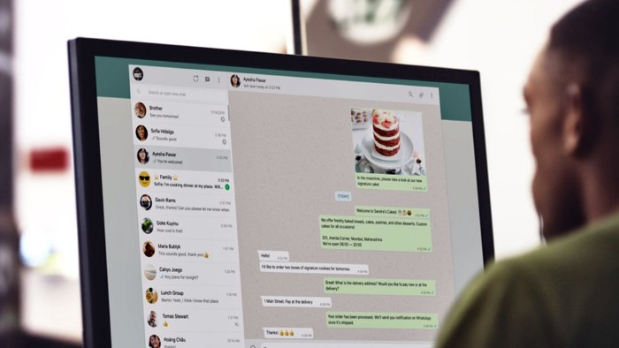

Tenho dificuldade em atender todo mundo bem pela internet, o que eu faço?
Atendente virtual Strelo
Você se lembra quando a gente precisava buscar por produtos e serviços através das listas telefônicas? Das antigas, né? 🤣🤣 Pois é, ainda bem que nós não precisamos mais delas! Com o avanço da tecnologia, a maioria das empresas, independente do segmento e porte, vêm se adaptando ao mundo digital, vendendo e apresentando os seus produtos e serviços através da internet. Porém, apesar de existir muitas pessoas a serem alcançadas, é necessário estar preparado para atender com eficiência, qualidade e rapidez às novas demandas do mercado virtual.
Precisando encontrar formas de se comunicar e vender a distância, as marcas estão influenciando ainda mais a evolução do comportamento de compra dos novos consumidores, conhecidos como consumidores 4.0. Este novo público não quer só consumir, ele quer ver, sentir, escolher, participar, se divertir, comparar, criticar, recomendar e ser reconhecido. A partir dessas novas exigências, já ouviu falar em automação no atendimento e nos chatbots inteligentes? Simplificando, são programas que conversam em um chat com você, sendo possível automatizar tarefas repetitivas. Existem diversas vantagens em seu uso, como por exemplo, a quantidade de horas da sua vida que você irá economizar em trabalhos que um robô poderia executar facilmente. Mas, para além disso, podemos citar:
- Melhor eficiência nas vendas;
- Mais agilidade no atendimento;
- Menor custo de operação no WhatsApp;
- Mais escalabilidade para o negócio.
Que tal ter um robô com essas vantagens acima e que ainda atenda os seus clientes de forma humanizada? Pensando nisso, o Strelo trouxe os atendentes digitais programados para conversar com o tom da sua marca, se adaptando na forma como você se comunica com os seus clientes!
Antes de começarmos a falar sobre cada detalhe desta incrível ferramenta, conheça o Strelo!